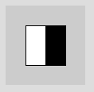
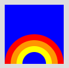

Zeichnen
Fragen
- Wo ist (0 | 0) im Koorindatensystem bei Processing?
- Was ist bein Befehl?
- Wie ist ein Befehl aufgebaut?
- Was ist der Unterschied zwischen einem Befehl und einer Funktion?
- Welche einfachen Formen kannst du mit Processing zeichnen?
- Gib den Code an, den du benötigst, um eine Linie zu zeichnen, die bei (0|0) startet und bei (25|50) endet.
- Wenn ich zwei Formen an der selben Stelle zeichne und sie sich überlappen, welche Form ist dann die obere? Die ich zuerst gezeichnet habe oder die ich als zweites gezeichnet habe?
- Was legt der Zeichenmodus fest?
- Wie lange gilt der Zeichenmodus, wenn ich einen Zeichenmodus z.B. mihilfe von rectMode() festlege?
- Gibt den Code an, der nötig ist um ein Rechteck mit folgenden Eigenschaften zu zeichenen:
- Position: P(10, 15)
- Breite: 20
- Höhe: 60
- Modus: CORNER
- Wie hoch und wie breit ist das gezeichnete Rechteck?
rectMode(CORNERS);rect(45, 50, 65, 75); - Farben und Graustufen werden mithilfe von Zahlen angegeben. Wie groß, dürfen diese Zahlen maximal sein? Was passiert, wenn die Zahl höher ist?
- Macht es es einen Unterschied, an welcher Stelle in meinem Code ich den Befehl background() verwende? Warum?
- Je nachdem, wie viele Zahlen ich z.B. im Befehl fill() angebe, erhalte ich eine andere Art von Farbe. Wie viele unterschiedliche Möglichkeiten habe ich, Zahlen anzugeben und welche Art von Farbe erhalte ich jeweils?
- In welcher Reihenfolge kann man die 3 Grundfarben einem Befehl background, fill oder stroke übergeben?
- Grün, Rot, Blau
- Gelb, Blau, Rot
- Rot, Gelb, Blau
- Blau, Grün, Rot
- Rot, Grün, Blau
- Wenn ich eine Farbe z.B. mit fill() festlege - wie lange gilt diese Farbe dann?
Aufgaben
1. Formen
Zeichne die folgenden Figuren zunächst auf Papier und schreibe dann die entsprechende Befehlsfolge auf.
| Haus | Halbkreis | Stern | Gesicht |
 |
 |
 |
 |
|
Zeichne die Figur ...
|
Zeichne die Form mithilfe eines Segments | Zeichne die Figur mit Hilfe von beginShape und endShape. | Zeichne die Figur Gesicht Grundformen. Achte darauf auf die Reihenfolge der Befehle, damit alle Teile sichtbar sind. |
2. Farben
Zeichne folgende Figuren:
| Halb-halb | Gesicht | Mund | Regenbogen |
|  |
 Arbeite ausschließlich mit |